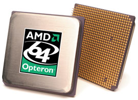
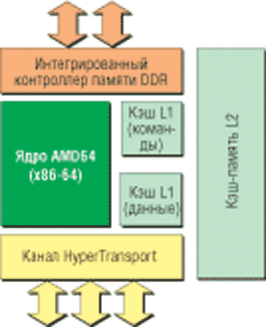
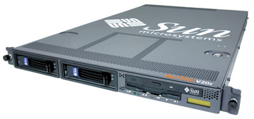
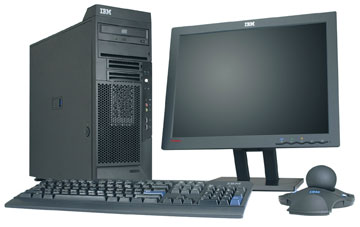

Владислав Шаров
С тех пор как корпорация AMD (http://www.amd.com) в 2003 г. представила архитектуру AMD64, процессоры Opteron для серверов и рабочих станций успели завоевать десятки наград за новаторство и достижения в производительности, а также заручиться поддержкой более тысячи OEM-производителей, разработчиков программного и аппаратного обеспечения, системных интеграторов и дистрибьюторов. По мнению большинства экспертов, выход новых процессоров на рынок вызвал на нем ряд изменений. Хотя о повсеместном распространении Opteron говорить пока рано, общее внимание этому процессору уже обеспечено. Причем Opteron продолжает завоевывать признание: растет его поддержка в сфере кластерных технологий и высокопроизводительных вычислений (HPC), среди клиентов систем баз данных и пользователей рабочих станций, работающих с такими ресурсоемкими приложениями, как финансовое моделирование, создание цифрового контента и САПР.
По мнению аналитиков, именно архитектура Opteron, которая позволяет исполнять как 64-, так и 32-разрядные программы, пришлась по душе многим заказчикам и привела к альянсам AMD с тремя из четырех крупнейших производителей серверов. Благодаря возможности работать с 64-разрядным ПО эти процессоры помогают повысить производительность серверов, позволяя им адресовать свыше 4 Гбайт памяти. Это особенно полезно в таких приложениях, как базы данных. Однако на этих процессорах работают и 32-разрядные программы, которые пока еще составляют львиную долю серверных приложений.
Архитектура AMD64
Технология AMD64 развивает стандартную 32-разрядную архитектуру x86, обеспечивая в ней поддержку ресурсоемкой 64-разрядной среды, что позволит реализовать функции компьютерной обработки нового поколения и соответствующие уровни производительности. При разработке платформы AMD64 компания ставила целью обеспечить пользователям надежные, лучшие в своем классе показатели быстродействия и в традиционных 32-разрядных программах, с которыми они работают сегодня. При этом одной из основных задач было дать пользователям возможность подготовиться к плавному переходу на будущие высокопроизводительные 64-разрядные приложения.
Opteron, первый в мире 32/64-разрядный процессор (рис. 1), совместимый с архитектурой x86, создан на базе технологии AMD64 и использует архитектуру прямых соединений Direct Connect Architecture. Эта архитектура устраняет узкие места в работе внешней шины и позволяет напрямую подключить процессоры, контроллер памяти и подсистему ввода-вывода к центральному процессору, что повышает общесистемную производительность и эффективность обработки. AMD также стала первой компанией, объявившей о завершении разработки двухъядерных процессоров x86 для 64-разрядных приложений.
|  | Рис. 1. Микропроцессор Opteron.
|
Известно, что достаточно долгое время 32-разрядная архитектура х86 не претерпевала никаких принципиальных изменений. Попробуем разобраться, как же реализуется 64-разрядность в Opteron. В этом процессоре к имеющейся системе регистров добавлено несколько новых, а существующие просто расширены. Так, регистры общего назначения дополнены восемью регистрами R8-R15, используемыми в 64-разрядном режиме (иными словами, для их использования потребуется перекомпиляция программ), а существующие EAX, EBX и т. п. расширены с 32 до 64 разрядов. Кроме того, восемь новых 128-разрядных XMM-регистров добавлено в блок SSE, что не только обеспечивает поддержку команд SSE2, но и улучшает обработку мультимедиа. Вообще говоря, увеличение числа регистров призвано повысить производительность ресурсоемких приложений, например, в программах научных расчетов.
Режимы работы
Чтобы процессор мог одновременно работать как с 32-разрядным, так и с 64-разрядным кодом и регистрами, архитектура AMD64 предполагает поддержку двух режимов: так называемого длинного режима (Long mode), в котором имеется два подрежима - "истинно 64-разрядный" и режим совместимости (Compatibility mode), а также наследуемого режима (Legacy mode). Для чего же понадобились два дополнительных режима для 64-разрядного режима? Все очень просто: когда используется 32-разрядная ОС, задействовать 64-разрядный режим в полном объеме нет никакого смысла. Но как только произойдет переход на "настоящую", 64-разрядную ОС, возникает альтернатива. Можно использовать старое, 32-разрядное ПО (и тогда нужен режим совместимости), а можно - новое, 64-разрядное. Кроме того, разработчики говорят, что переключения "частных" режимов Long mode происходят весьма быстро, в отличие от переключения режимов работы процессора. Таким образом, введение таких режимов становится вполне целесообразным.
Compatibility mode обеспечивает двоичную совместимость с существующими 16- и 32-разрядными приложениями при работе с 64-разрядной ОС. Режим совместимости разрешается операционной системой по принципу отдельных кодовых сегментов. Однако, в отличие от 64-разрядного режима, сегментация функционирует обычным образом, используя семантику защищенного режима. С точки зрения выполняемого приложения процессор выглядит как обычный кристалл x86 в защищенном режиме (Protected mode). Однако с точки зрения ОС трансляция адресов, работа с прерываниями и исключениями, а также системные структуры данных используют механизмы 64-разрядного Long mode.
Как уже отмечалось, в дополнение к Long mode новая архитектура предполагает поддержку наследуемого режима, обеспечивающего двоичную совместимость с 16- и 32-разрядными ОС. Иначе говоря, в Legacy mode процессор уподобляется обычному 32-разрядному кристаллу x86. В этом режиме не задействуется ни одна из 64-разрядных функций, а процессор работает как стандартный x86-процессор. Этот режим полностью совместим с существующими 32-разрядными реализациями архитектуры x86, в частности, включает поддержку сегментированной памяти и 32-разрядных регистров общего назначения и указателя инструкций.
Стоит отметить, что полностью все возможности Opteron задействованы именно в 64-разрядном режиме Long mode, т. е. при работе с 64-разрядными ОС.
Основные особенности Opteron
В архитектуре нового процессора (рис. 2) имеются 12-ступенчатый конвейер для целочисленных вычислений и 17-ступенчатый для операций с плавающей точкой. Полностью виртуальное 64-разрядное адресное пространство (52 разряда физической памяти) теоретически позволяет получить доступ к 4,5 Тбайт памяти. Регистры общего назначения имеют разрядность 64 бита. Для кэш-памяти инструкций и данных первого уровня (L1) отведено по 64 Кбайт, объем кэш-памяти второго уровня (L2) равен 1 Мбайт. Встроенный двухканальный контроллер памяти DDR, позволяющий обойтись без северного моста набора микросхем, работает на частоте процессора и снимает ограничения по пропускной способности, связанные с фронтальной шиной FSB. Три встроенных канала шины HyperTransport обеспечивают совокупную пропускную способность до 19,2 Гбайт/с.
|  | Рис. 2. Блок-схема процессора Opteron.
|
Процессор выполнен с соблюдением проектных норм 0,13 мкм и с использованием технологии "кремний на изоляторе" (SOI). Микросхема содержит 105,9 млн транзисторов, реализованных на площади кристалла 193 кв. мм. Максимальная рассеиваемая мощность не превышает 89 Вт. Кристалл процессора помещен в корпус типа mPGA с числом контактов, равным 940 (Socket 940).
Одно из главных новшеств архитектуры AMD64 - интегрированный в процессор контроллер памяти. Основное преимущество встроенного контроллера памяти по сравнению с обычным, расположенным в северном мосте набора микросхем, состоит в том, что контроллер памяти работает на частоте процессора, а следовательно, обладает низкой латентностью. Причем эта латентность тем меньше, чем больше частота, на которой работает процессор.
Контроллер памяти Opteron может работать с DDR-памятью и использовать ширину шины 128 разрядов. В принципе допускается как один, так и два канала памяти. Кроме того, вполне логично, что встроенный контроллер поддерживает память с обнаружением и коррекцией ошибок ECC.
Несомненно, один из ключевых моментов в новом процессоре - технология HyperTransport. Она применяется для связи не только процессора и набора логики, но и различных частей набора микросхем, разработанного AMD для Opteron, а также для связи между процессорами при построении многопроцессорных систем посредством встроенных в процессор дополнительных контроллеров HyperTransport.
Вообще говоря, технология межсоединений HyperTransport представляет собой высокоскоростную, высокопроизводительную связь "точка-точка" для интегральных схем. Считается, что благодаря ей процессы в высокопроизводительных компьютерах, сетевых и коммуникационных устройствах могут взаимодействовать друг с другом быстрее, чем в случае других существующих на данный момент технологий. Пропускная способность технологии HyperTransport может обеспечить многократное увеличение скорости передачи данных по сравнению с ранее созданными системными межсоединениями, которые, как правило, поддерживают пропускную способность на уровне 266 Мбайт/с.
Известно, что в системе имеется по меньшей мере несколько областей, для которых технология HyperTransport позволяет устранить "бутылочное горлышко". Так, для оптимальной работы пропускная способность фронтальной шины процессора должна увеличиваться с ростом тактовой частоты. С заменой традиционной шины процессора на HyperTransport пропускная способность существенно увеличивается.
Рассмотрим ситуацию, когда процессору требуются данные, отсутствующие в его кэш-памяти. В таком случае ему приходится посылать запрос в системную память. В традиционной архитектуре, когда контроллер оперативной памяти интегрирован в северный мост набора логики, запрос будет обрабатываться последним, что повлечет за собой дополнительные задержки и увеличит латентность, которая, в свою очередь, снижает производительность системы в целом. Для решения данной проблемы, как уже отмечалось, в семействе Opteron AMD интегрировала контроллер памяти непосредственно в процессоры. Прямой доступ к памяти может заметно понизить латентность и увеличить практическую пропускную способность. Разумеется, что увеличение скорости одного из компонентов сказывается на производительности всего компьютера.
В настоящее время пропускная способность интерфейса, соединяющего северный мост системы с контроллером ввода-вывода (южным мостом), обычно составляет от 266 Мбайт/с до 1 Гбайт/с. Конечно, эти значения приемлемы для среднестатистического компьютера, однако для производительных рабочих станций и серверов такая полоса пропускания может оказаться слишком низкой. К тому же с каждым днем ситуация все более обостряется: производители начинают использовать PCI-X 2.0, Gigabit Ethernet, USB 2.0 и другие стандарты, требующие большей скорости передачи данных. Благодаря внедрению HyperTransport в межкомпонентные связи наборов микросхем скорость передачи данных между мостами наборов микросхем растет, что означает повышение общего стандарта производительности. Вообще говоря, архитектура систем, построенных с применением технологии HyperTransport, представляет собой довольно внушительное дополнение к традиционной архитектуре и включает ряд новаций. Принцип соединения двух-трех компонентов набора микросхем PCI-шиной был заменен на туннели. Дополнительные компоненты довольно просто включить в цепь, получив платформу с особенными возможностями.
Очевидно, что для создания простой и недорогой комбинации из блоков системной логики следует использовать недорогую же последовательную шину, которая будет поддерживать большое число устройств (т. е. масштабироваться), обладать простотой и надежностью и, разумеется, высокой скоростью передачи данных. Нетрудно догадаться, что технология HyperTransport как нельзя лучше подходит для создания систем, где требуются описанные выше качества: она легко расширяется как по количеству поддерживаемых компонентов, так и по части межблочной пропускной способности. Разумеется, в шине имеется управление энергопотреблением и коррекция ошибок.
И о погодеВ январе 2004 г. было объявлено о том, что на Web-сайте http://www.weather.com - одном из самых авторитетных Интернет-источников информации о погоде - успешно завершена миграция 32-разрядных приложений баз данных на серверы IBM с процессорами Opteron. Переход на IBM eServer 325 с базой данных Oracle8i был осуществлен практически без простоев и обеспечил заметный рост производительности. Руководство компании The Weather Channel, которой принадлежит сайт, отметило, что им понравилась гибкость и простота интеграции решения, а также выгодное соотношение цена/производительность. Так, протестировав процессор Opteron, они смогли убедиться, что приложения стали работать гораздо быстрее, причем это не потребовало дополнительных затрат на разработку ПО. Затраты, связанные с прерыванием бизнес-процессов, традиционно оказывались нежелательным побочным эффектом миграции на новые технологии, что нашло подтверждение в недавнем исследовательском отчете компании Momentum Research Group (MRG), проанализировавшей работу более чем двухсот предприятий. Чтобы избежать подобных явлений, корпоративные клиенты все чаще обращаются к 32- и 64-разрядным процессорам AMD Opteron на базе архитектуры x86, стремясь сократить побочные затраты, которые издавна ассоциировались с развертыванием нестандартных 64-разрядных платформ.
|
Набор микросхем AMD 8000
Корпорация AMD разработала для своих процессоров восьмого поколения новый набор микросхем (НМС) AMD-8000. Этот НМС значительно отличается от всех своих предшественников и олицетворяет новый подход к архитектуре наборов логики. Так, AMD-8000 не содержит привычных северного и южного мостов, а состоит из так называемых туннелей-контроллеров. Эти контроллеры имеют на входе одну полосу пропускания, а на выходе - другую, соответственно используя разницу для своих целей. При этом набор логики позволяет соединять "в цепочку" произвольное число туннелей и тем самым реализовать системы различной сложности и с различными характеристиками.
В составе AMD-8000 было анонсировано три базовых компонента для построения систем на Opteron. К ним относятся:
- графический AGP-туннель (AMD-8151), поддерживающий шину AGP 3.0;
- PCI-X-туннель (AMD-8131) для поддержки шины PCI-X;
- туннель ввода-вывода (AMD-8111), поддерживающий USB-порты, IDE-устройства и шину PCI.
Для соединения компонентов НМС с процессором и процессоров между собой в многопроцессорных системах сам процессор Opteron имеет до трех встроенных контроллеров шины HyperTransport с шириной 16 разрядов и пропускной способностью 3,2 Гбайт/с в каждую сторону.
Графический AGP-туннель AMD-8151 представляет собой контроллер шины AGP, поддерживающий устройства AGP 4X и AGP 8X. Кроме того, эта микросхема содержит два контроллера шины HyperTransport: 16-разрядный входной и 8-разрядный выходной (так называемые Link-A и Link-B). Благодаря этому AGP-туннель может получать данные со скоростью 3,2 (6,4) Гбайт/с, а передавать далее - со скоростью 0,8 (1,6) Гбайт/с (в AMD-8000 это передача на южный мост). Разница в полосе пропускания составляет в данном случае 2,4 Гбайт/с, что может быть использовано в "собственных интересах" контроллера. Например, этого как раз достаточно для полноценной работы AGP 8X с пропускной способностью 2,1 Гбайт/с.
PCI-X-туннель AMD-8131, как и AMD-8151, содержит два контроллера HyperTransport с шириной шин 16 и 8 разрядов в каждую сторону, однако назначение этой микросхемы совсем иное. Пропускная способность каналов составляет 3,2 (6,4) и 1,6 (3,2) Гбайт/с в каждую сторону соответственно. Кроме того, эта микросхема содержит два моста PCI-X.
Туннель ввода-вывода AMD-8111, в отличие от AMD-8151 и AMD-8131, имеет лишь один контроллер 8-разрядной шины HyperTransport с пропускной способностью 400 Мбайт/с (суммарная 800 Мбайт/с), поскольку предполагается, что эта микросхема всегда будет находиться в конце HyperTransport-цепочки. Туннель AMD-8111 поддерживает обычную 33-МГц 32-разрядную шину PCI 2.2, AC'97 и 10/100 Ethernet-интерфейсы, два концентратора USB 2.0 (шесть портов USB) и двухканальный EIDE-контроллер с поддержкой режима ATA-133.
Комбинируя данные туннели-контроллеры различным образом, можно получать системы разного назначения. Тем не менее возникает вопрос, зачем понадобились три микросхемы, когда в принципе все функции можно было реализовать в одном кристалле. А дело здесь вот в чем. Редко когда в системе необходимы абсолютно все возможности, предоставляемые набором микросхем. Обычно часть функций не используется, но платить за них все равно приходится. Теперь для построения системы обязательна только одна микросхема - AMD-8111; остальные две, вообще говоря, могут отсутствовать. Таким образом, не надо будет платить за ненужные функции. Для построения серверов следует использовать AMD-8131 (при необходимости даже несколько) плюс обязательный туннель AMD-8111. В графических рабочих станциях, конечно, трудно будет обойтись без AGP-туннеля AMD-8151.
Таким образом, вместо нескольких НМС для каждой линейки продуктов: одного для рабочих станций, одного или нескольких для серверов - AMD предложила использовать один строительный набор из трех компонентов, которые можно объединять практически в любой удобной для клиента комбинации.
Летом 2004 г. AMD представила пополнение в семействе НМС AMD-8000, выпустив туннель AMD-8132 HyperTransport PCI-X 2.0. Это самый последний продукт в расширяющейся линейке вспомогательных устройств, рассчитанных на поддержку архитектуры AMD Direct Connect Architecture. Компонент AMD-8132 предназначен для работы в режимах 1 и 2. Кроме того, он обеспечит связь между высокопроизводительной шиной PCI-X 2.0 и системой на базе процессора Opteron с поддержкой повышенной пропускной способности, расширенных возможностей RAS, мощных средств управления данными и улучшенных соединений по технологии HyperTransport.
AMD и все-все-все...
Особенно активное продвижение Opteron началось в этом году. И первой крупной компанией, начавшей год с использования Opteron в своей продукции, стала Sun Microsystems (http://www.sun.com), которая до недавнего времени с большим скепсисом относилась к "чужим" процессорам.
Итак, в начале февраля было объявлено, что процессоры Opteron будут устанавливаться в серверах Sun Fire V20z (рис. 3) - первых машинах Sun, в которых используются процессоры AMD. Выбор процессора был неслучаен. Дело в том, что в ноябре 2003 г. корпорации Sun Microsystems и AMD объявили о заключении стратегического альянса, в рамках которого Sun намерена поставлять системы Sun Fire на базе процессора AMD Opteron и оптимизированные для него версии ОС Solaris и платформы Java, а также ОС Linux. Новые серверы линии Sun Fire сохранят все преимущества Solaris OS и Java Enterprise System, которые будут работать в стандартной архитектуре x86, в сочетании с производительностью процессора AMD Opteron. Кроме того, соглашение касается ряда долгосрочных проектов развития технологии, предусматривающих совместную разработку новых аппаратных и программных решений.
|  | Рис. 3. Сервер Sun Fire V20z.
|
Модели Sun на базе OpteronПроцессор Opteron начал применяться в четырехпроцессорном сервере Sun Fire V40z, а также в рабочих станциях Sun Java W1100z (однопроцессорной) и Sun Java W2100z (двухпроцессорной). Сервер Sun Fire V40z может использоваться в различных отраслях деятельности, таких, как финансовые услуги, научные исследования (в том числе в биологии), нефтеразведка, электронное проектирование, конструирование автомобилей и самолетов, предоставление сетевых услуг, а также в правительственных службах и сфере образования. Новые серверы и рабочие станции Sun на базе процессора AMD Opteron могут работать под управлением ОС Solaris, Linux и Windows, имея полный сертификат Windows Hardware Qualification List (WHQL). Рабочие станции W1000z и W2100z комплектуются системой Sun Java Desktop System с широким выбором рабочих программ.
|
В конце февраля о расширении взаимного сотрудничества объявили корпорации AMD и HP (http://www.hp.com). В рамках этого сотрудничества планируется расширить ассортимент серверов HP, разрабатываемых в соответствии с отраслевыми стандартами, включив в семейство серверов HP ProLiant системы на базе процессора Opteron. Компании выразили желание совместно работать над реализацией возможностей серверов нового поколения, заключив многолетнее соглашение о сотрудничестве в области закупочной деятельности, маркетинга и развития технологий.
По мнению представителей корпорации HP, ее стратегия Adaptive Enterprise гарантирует клиентам самые широкие возможности выбора среди платформ, основанных на отраслевых стандартах, в соответствии с текущими потребностями бизнеса. А процессор Opteron как продукт эволюции традиционной архитектуры x86 обеспечивает прирост производительности в 32-разрядной среде и открывает благоприятные перспективы для будущего перехода на 64-разрядные экосистемы. При этом Opteron хорошо вписывается в нынешнюю стратегию HP по выпуску серверов ProLiant, Integrity и NonStop, поскольку он рассчитан на применение в высокопроизводительных серверах и рабочих станциях, поддерживающих наиболее ресурсоемкие приложения масштаба предприятия. В свою очередь в AMD поспешили заявить, что выбор процессора Opteron лидером рынка для линейки своих серверов свидетельствует об авторитете AMD в сегменте корпоративных систем и о твердом стремлении HP расширить выбор предлагаемых клиентам стандартных платформ.
По мнению обеих сторон, партнерские отношения способствуют расширению возможностей HP, цель которой - оснастить стандартными решениями все уровни компьютерной среды центра данных. У клиентов пользуются спросом новые 32- и 64-разрядные решения HP для таких специфических сегментов рынка, как приложения для высокопроизводительных вычислений, системы с интенсивным использованием памяти и модульные серверы. Обширный портфель инфраструктурных решений HP, основой которого служат новые серверы HP ProLiant на базе процессора Opteron, обеспечивает согласованную работу средств администрирования, систем хранения данных, операционных систем и профессиональных служб. Технология AMD64 подходит для приложений, требующих значительных ресурсов памяти и самых высоких показателей по соотношению цена/производительность: она позволяет клиентам использовать одну платформу и для 32-разрядных, и для более сложных 64-разрядных приложений.
Одновременно с объявлением об этом соглашении HP представила новые серверы ProLiant, оснащенные процессорами AMD Opteron, в том числе двухпроцессорную модель ProLiant DL145 и четырехпроцессорный рабочий сервер DL585, а также обнародовала свои планы по выпуску модульных серверов.
Февраль оказался богатым не только на партнерские и стратегические соглашения, но и на выпуск новой продукции. Дело в том, что в этом месяце семейство процессоров Opteron пополнилось продуктами с низким и средним уровнями энергопотребления. По заявлению представителей компании, с выпуском этих процессоров у корпоративных клиентов появилась возможность построить на базе технологии AMD64 общую инфраструктуру, охватывающую все уровни компьютерной среды предприятия - от высокопроизводительных кластеров до модульных серверов.
Процессоры AMD Opteron HE (55 Вт) и EE (30 Вт) для серверов и рабочих станций обеспечивают высокую производительность 32-разрядных приложений и простой переход на 64-разрядные вычисления для тех клиентов, которые заинтересованы в повышении плотности монтажа оборудования, защите своих инвестиций и максимальной производительности в расчете на ватт мощности. По этому показателю новые модели превосходят все процессоры своего класса, о чем свидетельствуют результаты эталонного тестирования при помощи стандартного пакета SPEC CPU2000.
Как известно, организации, уделяющие внимание проблеме экономии мощности в своих центрах данных, особенно заинтересованы в получении продуктов с низким энергопотреблением и одновременно с наивысшей производительностью в расчете на ватт, надежной защитой и гарантией сохранности инвестиций. По понятным причинам компании стремятся "выжать" как можно больше вычислительных мощностей из своих центров данных, размеры которых фиксированы, а энергобюджет жестко ограничен, так что производительность в расчете на ватт становится все более актуальным показателем для таких предприятий.
Новые экономные процессоры AMD Opteron хорошо подходят и для рынка модульных серверов. Такие компактные серверы могут оказаться дешевле традиционных систем и при этом работать эффективнее своих полноразмерных аналогов.
В марте настал черед корпорации IBM (http://www.ibm.com), хотя стоит отметить, что именно эта компания первой среди ведущих вендоров выпустила в июле 2003 г. сервер (это был IBM eServer 325), построенный на процессорах Opteron. Итак, весной была представлена IntelliStation A Pro (рис. 4) - первая рабочая станция на базе процессора Opteron. Предназначенная для приложений нового поколения с повышенными требованиями к памяти и графической подсистеме, A Pro реализовала масштабируемость 64-разрядных вычислений без ущерба для существующих 32-разрядных приложений. IntelliStation A Pro расширила линейку рабочих станций и серверов IBM, обеспечив простой переход от 32-разрядных вычислений к 64-разрядным.
|  | Рис. 4. Рабочая станция IBM IntelliStation A Pro.
|
Напомним, что IBM IntelliStation - это небольшие мощные компьютеры, служащие основным инструментом решения задач, где интенсивно используются вычисления с плавающей точкой, таких, как автоматизированное проектирование (системы САПР), разведка и эксплуатация нефтяных месторождений, разработка новых лекарств, создание цифрового контента и финансовый анализ.
В новых IntelliStation A Pro процессоры Opteron используются вместе с высокоскоростной архитектурой HyperTransport, поддерживающей графические платы AGP 8X и PCI-X. Кроме двух Opteron Model 248 (2,2 ГГц) с памятью PC3200, IntelliStation оборудована видеоплатами компании Nvidia.
В мае AMD выпустила три новые модели процессоров Opteron - 150, 250 и 850, предназначенные соответственно для одно-, двух- и четырехпроцессорных серверов. Новые 64-разрядные кристаллы AMD обеспечивали более высокую производительность по сравнению с существующими на тот момент моделями Opteron 148, 248 и 848. AMD не уточнила, каким образом появились эти номера моделей, но, скорее всего, тактовая частота процессоров была повышена до 2,4 ГГц. Максимальное быстродействие существующих до той поры моделей Opteron составляло 2,2 ГГц.
В июне компания Fujitsu Systems Europe (FSE, http://www.fse.fujitsu.com) выбрала кластерные решения на базе процессора AMD Opteron для развертывания в своем первом всемирном центре корпоративных приложений в Тулузе (Франция). Откликнувшись на возрастающий поток запросов на доступ к системам Opteron в Европе, FSE организовала первую в мире лабораторию, построенную исключительно на базе процессоров Opteron и призванную удовлетворить растущие потребности корпоративных пользователей и партнеров по разработке ПО в средствах тестирования приложений.
Однако самый значительный успех новой технологии - семикратное увеличение представительства систем на базе процессора Opteron в списке суперкомпьютеров Top500. После впечатляющего дебюта в списке Top500, опубликованном в ноябре 2003 г., системы на базе Opteron занимают теперь уже три позиции в первой двадцатке последнего варианта списка, а общее их количество достигло тридцати. Они лидируют по результатам ряда эталонных тестов для корпоративных систем, включая TPC-C#8482 (четырехпроцессорные серверы), SAP#174 (четырехпроцессорные серверы) и MMB2 (двухпроцессорные серверы).
Не секрет, что х86-совместимые системы доминируют на рынке технических кластеров. Так, по оценкам IDC, свыше 90% установленных технических кластеров представляют собой x86-совместимые решения обоих типов - x86 и x86-64. Более того, проводимые в IDC исследования среди пользователей показывают, что потребности последних остаются прежними - улучшение соотношения цена/производительность, повышение быстродействия систем, увеличение объема памяти и совместимость программных продуктов. Именно об этих тенденциях свидетельствует расширяющееся представительство установленных систем на базе процессоров Opteron в разнообразных отраслевых списках, подобных Top500.
Ближайшее двухъядерное будущее
В середине лета AMD объявила о новой технологической вехе - завершении разработки двухъядерных процессоров AMD64. Корпорация планирует начать поставки высокопроизводительных двухъядерных продуктов на рынок серверов архитектуры x86 в середине 2005 г. и внедрить двухъядерные решения для старших моделей клиентских ПК во второй половине того же года. Таким образом, первой представив стратегию двухъядерных процессоров архитектуры x86, AMD теперь первой же объявила о завершении разработки двухъядерного процессора архитектуры x86 для 64-разрядных вычислений.
Как известно, AMD разрабатывала свои многоядерные процессоры в течение нескольких лет. С момента первого публичного обсуждения платформы AMD64 в 1999 г. AMD указывала, что ее новая технология будет поддерживать в том числе и многоядерные процессоры. В корпорации полагают, что по мере того, как новые поставщики решений присоединяются к экосистеме AMD64, приближается и тот день, когда "только 32-разрядные" системы или "только 32-разрядные" двухъядерные процессоры станут считаться устаревшими.
В дополнение к этому планируемый ввод в эксплуатацию завода Fab36 позволит AMD внедрить технологии и продукты, обеспечивающие 64-разрядные вычисления, включая многоядерные. Усовершенствования процессоров AMD64 будут продолжены с переходом на производство по технологическим нормам 90 нм, который уже начался. Он обеспечит более высокую гибкость для увеличения производительности процессоров и уменьшения потребляемой мощности. Кроме того, достижения AMD в производственных технологиях демонстрирует сотрудничество с IBM и строительство завода AMD Fab36, который, как ожидается, будет готов к работе по технологическим нормам 65 нм в середине 2005 г. Это позволит AMD в 2006 г. начать поставки продукции, которая будет иметь меньшую потребляемую мощность и более высокую производительность.
AMD и Microsoft: новая технология безопасностиКомпьютерная безопасность стала одной из самых актуальных проблем как для настольных систем, так и для корпоративных сетей. Использование процессоров AMD64 в сочетании с пакетом обновления Microsoft Windows XP Service Pack 2 (SP2) поможет более успешно противостоять атакам, связанным с определенными классами вирусов и червей. Технология антивирусной защиты AMD в сочетании с программным компонентом Microsoft Data Execution Prevention из пакета Windows XP SP2 способна обезвреживать некоторые вирусы (а именно атаки, вызывающие переполнение буфера) и предотвращать их репликацию и распространение в другие системы. Комбинация процессора AMD64 и технологий Windows XP SP2 укрепляет безопасность пользователей при работе с электронной почтой и просмотре содержимого Интернет-сайтов, а также сможет усилить защиту сетей и памяти. Новая технология защиты памяти, называемая невыполнением (no execute - NX), предотвращает исполнение кода в зонах оперативной памяти системы. Она способна отразить большинство атак и основана на возможностях современных 32- и 64-разрядных процессоров. Все процессоры AMD64, включая модели Opteron, проданные в 2003 г., оснащены усовершенствованными средствами антивирусной защиты AMD и могут использоваться совместно с пакетом Windows XP SP2. |